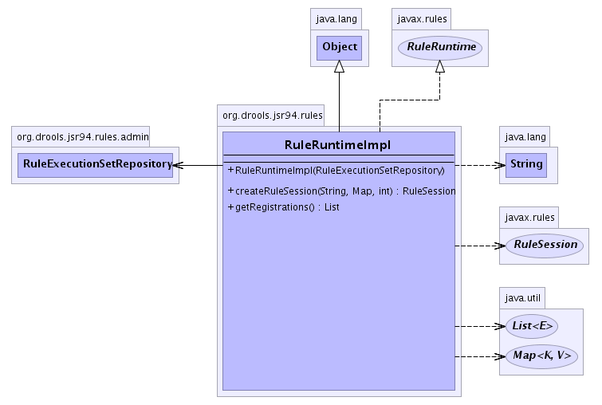

org.drools.jsr94.rules
Class RuleRuntimeImpl
java.lang.Object
 org.drools.jsr94.rules.RuleRuntimeImpl
org.drools.jsr94.rules.RuleRuntimeImpl
- All Implemented Interfaces:
- java.io.Serializable, javax.rules.RuleRuntime
public class RuleRuntimeImpl
- extends java.lang.Object
- implements javax.rules.RuleRuntime
The Drools implementation of the RuleRuntime interface which
is the access point for runtime execution of RuleExecutionSets.
It provides methods to create RuleSession implementation as
well as methods to retrieve RuleExecutionSets that have been
previously registered using the RuleAdministrator.
The
RuleRuntime should be accessed through the
RuleServiceProvider. An instance of the
RuleRuntime can be retrieved by calling:
RuleServiceProvider ruleServiceProvider =
RuleServiceProvider.newInstance();
RuleRuntime ruleRuntime = ruleServiceProvider.getRuleRuntime();
Note: the release method must be called on the RuleSession
to clean up all resources used by the RuleSession.
- See Also:
RuleRuntime,
Serialized Form
-
- 
| Fields inherited from interface javax.rules.RuleRuntime |
STATEFUL_SESSION_TYPE, STATELESS_SESSION_TYPE |
|
Method Summary |
javax.rules.RuleSession |
createRuleSession(java.lang.String uri,
java.util.Map properties,
int ruleSessionType)
Creates a RuleSession implementation using the supplied
Drools-specific rule execution set registration URI. |
java.util.List |
getRegistrations()
Retrieves a List of the URIs that currently have
RuleExecutionSets associated with them. |
| Methods inherited from class java.lang.Object |
clone, equals, finalize, getClass, hashCode, notify, notifyAll, toString, wait, wait, wait |
RuleRuntimeImpl
public RuleRuntimeImpl(RuleExecutionSetRepository repository)
- Create a new
RuleRuntimeImpl.
createRuleSession
public javax.rules.RuleSession createRuleSession(java.lang.String uri,
java.util.Map properties,
int ruleSessionType)
throws javax.rules.RuleSessionTypeUnsupportedException,
javax.rules.RuleExecutionSetNotFoundException
- Creates a
RuleSession implementation using the supplied
Drools-specific rule execution set registration URI.
- Specified by:
createRuleSession in interface javax.rules.RuleRuntime
- Throws:
javax.rules.RuleSessionTypeUnsupportedException - if the ruleSessionType is not supported by Drools or the
RuleExecutionSet
javax.rules.RuleExecutionSetNotFoundException - if the URI could not be resolved into a
RuleExecutionSet- Parameters:
uri - the URI for the RuleExecutionSetproperties - additional properties used to create the
RuleSession implementation.ruleSessionType - the type of rule session to create.
- Returns:
- The created
RuleSession.
getRegistrations
public java.util.List getRegistrations()
- Retrieves a
List of the URIs that currently have
RuleExecutionSets associated with them. An empty list is
returned is there are no associations.
- Specified by:
getRegistrations in interface javax.rules.RuleRuntime
- Returns:
- a
List of Strings (URIs)